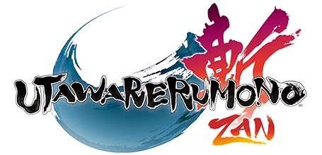
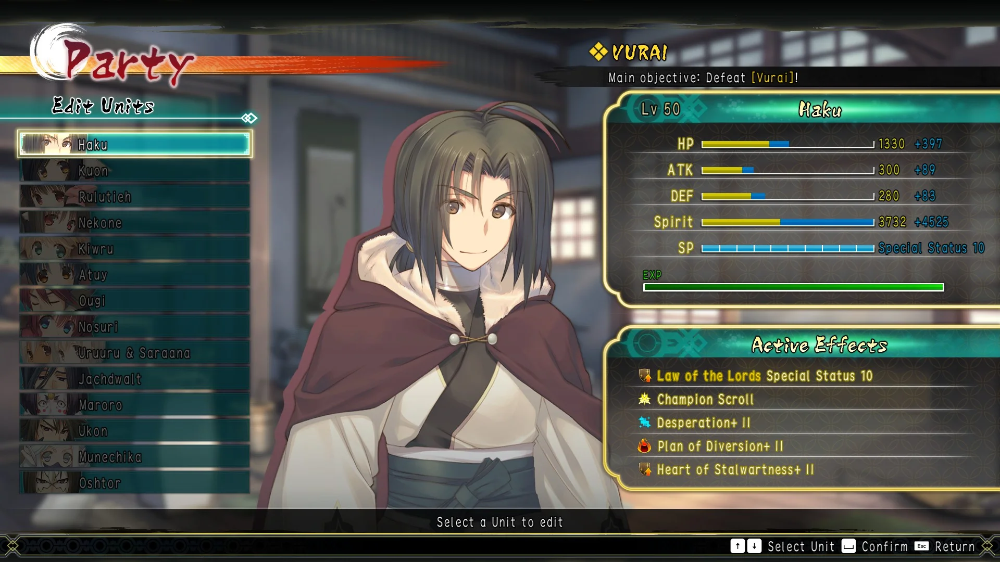
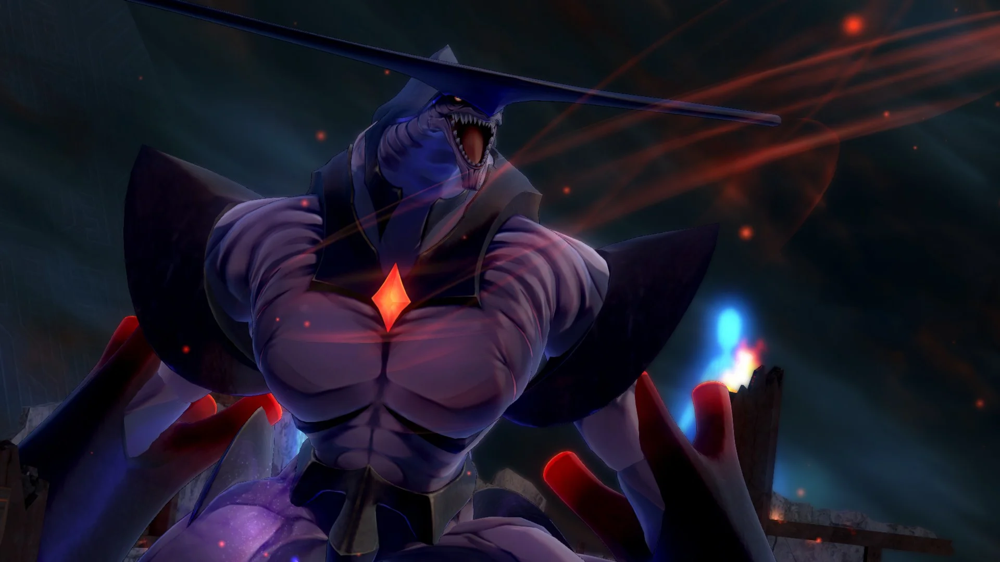
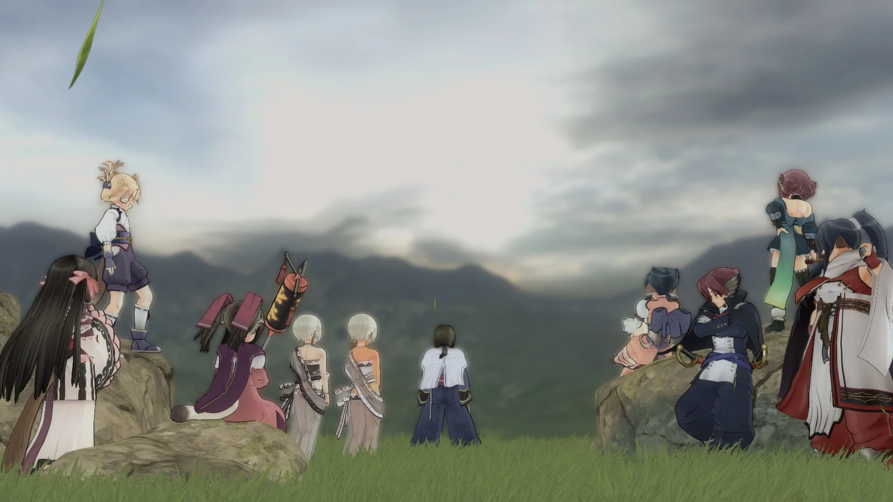
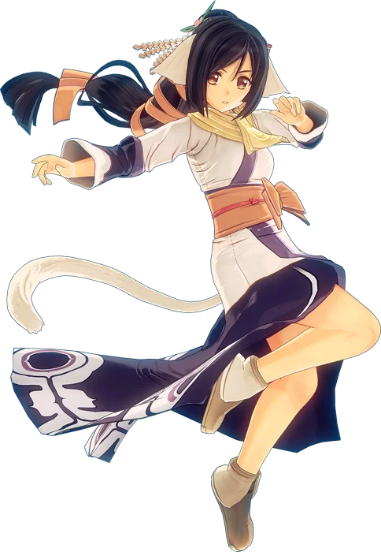

{kind=link}

Utawarerumono: ZAN is unfortunately one of the best musous I've ever played. It's also one of the shortest.
To be clear, I would significantly prefer a musou be too short than too long, I've played far too many games in this genre that overstay their welcome when going for 100%, but ZAN is too short.
Utawarerumono: ZAN isn't even a similar case to games like The Ochimusha, or even Dynasty Warriors 2 where those are very simple games with a short length to support that simplicity; ZAN is complex with some very deep mechanics, yet it doesn't have the runtime to fully explore those mechanics.
As of writing this I still feel like I've barely scratched the surface of ZAN's complexities despite having fully completed everything it has to offer.
Thanks to some help from external sources I at least have a grasp on everything well enough to clear the game's hardest stages, and to write this page, but I feel like there's so much more that just didn't have time to fully click.
I 100% complete every musou I play because I love this genre, I get a feeling of satisfaction out of knowing I've seen everything a game has to offer, and having as full of an understanding of what a game is trying to accomplish as realistically possible.
I enjoy the process of gaining a deep knowledge of the games I play, and while I don't necessarily need that to enjoy something, it certainly helps, and I usually expect to have that understanding by the time I've completed everything inside of a game like this; it's my goal in completing every musou after all!
Utawarerumono: ZAN is an incredible game, but it's an unsatisfactory completion, not due to poor quality, but because there's not enough of it...
Mechanically, Utawarerumono: ZAN is in a class of its own, it competes in a category that few other musous even bother with, and the few that do usually flounder.
Character building and party composition are the biggest draw to ZAN, being structured less like a traditional musou with miscellaneous soldiers acting independently, or support allies with mildly useful skills, and more like most JRPGs, with each character fitting into a very specific role.
Healers are a necessity in almost all battles, tanks can be incredibly useful in large boss encounters where aggro management is a factor, some characters exist solely as support units for providing buffs or managing Zeal (a meter used for special Chain-Attacks) and all of them are about equally viable in different scenarios.
In a genre where the top tier characters are often the ones that directly output the biggest damage numbers or have the widest attack range, ZAN is a game where the hard-hitting attackers are arguably some of the worst in the roster.
What I would consider to be ZAN's best unit is Haku, a character with one of the lowest base damage stats, purely a support unit, but what makes him so great is a combination of his ridiculously high Spirit stat and his ability to directly give units around him extra Zeal with one of his Chain-Attacks.

Kuon is another fantastic unit: despite being a jack-of-all-trades healer at face-value, she has the highest potential damage output of anyone, but only if built and played correctly. Kuon's unique passive gives her a 72% ATK increase when below 50% HP, when combined with equipment that gives the same effect, a hidden buff from one of her Chain-Attacks, support party members, and the ATK increasing Fire Sigil, all of which multiply on top of each other, Kuon can clear the hardest bosses in ZAN within seconds.
This is possible thanks to how much emphasis ZAN puts on unique skills and varying stat distribution; raw attack isn't all that should be prioritized, and every character has their own niche with a practical use-case. If the player is constantly targeted by a large boss monster they won't have an easy time getting in attacks, any damage taken is usually permanent unless an enemy drops a health restorative, solo Zeal management can be a nightmarish juggling act; so all of these problems need to instead be relegated to allies with the tools to ease them. Just because a character doesn't feel the best to play or doesn't have high damage output doesn't mean they can't contribute significantly to a party in other ways, and while that's a common concept in genres like JRPGs or MMOs, musous generally aren't designed like that! That's really indicative of ZAN as a whole, it's a very unorthodoxically designed musou, but it's very well put together and that makes it a very refreshing experience.
Stage design is equally unorthodox as everything else in ZAN, it still has the genre-defining hordes of small peons to take out, but much more emphasis is placed on boss encounters. Almost every mission has the same structure: a few simple warm-up objectives to start the mission, including 2 optional sub-objectives, ending with a boss fight- the real challenge of any given mission. Those early tasks are where the usual hordes of weak enemies are placed, serving less as a constant nuisance getting between you and the main objective, and more as fodder for filling your meters in preparation for the final fight. In a game with as much emphasis on stats and extra mechanics as ZAN, despite how homogenous this type of mission design becomes near late-game, this structure really works; you do need that extra filler time to build up those meters because they take time to fill and they're a definite necessity against those bosses.
Major bosses generally come in 2 varieties: humanoids, and giant monsters, with one being extremely agile, but defensively weaker to account for that, and the other being slow, hulking beasts that give a ton of dedicated openings for player aggression, but concede less player control in the flow of battle.

I love Utawarerumono: ZAN, every moment I spent playing this game was so fun, I only wish there were more to it, but that's what Utawarerumono: ZAN 2 is for! If not for the fact that this is an adaptation of a very long visual novel, Utawarerumono: Mask of Deception, and includes a very poor, spoiler-filled retelling of that VN's story, I would recommend ZAN to anyone who enjoys musous, it's a super fun game and is short enough to not be much of a commitment, but it does have that massive prerequisite behind it. But for those who don't mind being spoiled to Mask of Deception, or who have already read it, play ZAN, it's an equally worthwhile experience to what it's adapting, albeit in a very different way.

